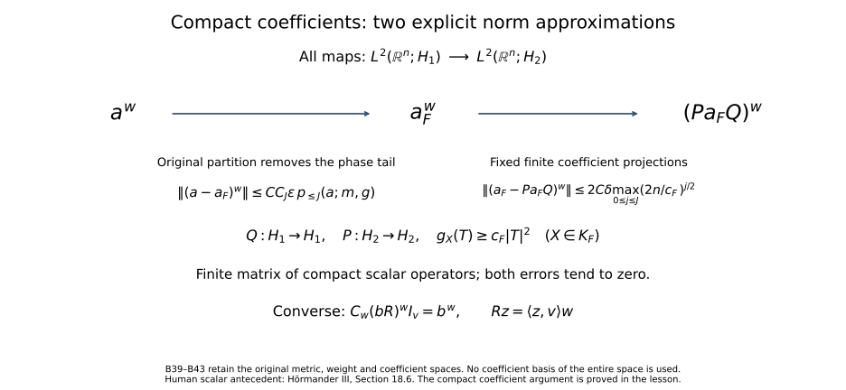

When a moving symbol scale controls an operator
Local estimates measure a symbol in one ellipsoid at a time. An operator also couples different ellipsoids. This lesson quantifies those couplings, uses them to sum operators on Hilbert spaces, and then asks which weights force every symbol in the class to give a bounded or compact operator. The converse statements concern the entire symbol class. They are not pointwise tests for a particular symbol.
We retain the conventions of Two measuring scales, one Weyl product: \(W=\mathbb R_x^n\times\mathbb R_\xi^n\), \(n\ge1\), \(D=-i\partial\), inverse Fourier factor \((2\pi)^{-n}\), and
\[ \sigma((x,\xi),(y,\eta))=\xi\cdot y-x\cdot\eta. \tag{B1} \]A metric is a field of positive quadratic forms \(g_X\), not necessarily a differentiable field. Put \(q_X=g_X^\sigma\). Unless a statement explicitly uses only a frozen form, the metric is slowly varying as in Section 1 of Localizing symbols with moving metrics and symplectically temperate:
\[ q_X(T)\le Cq_Y(T)(1+q_Y(X-Y))^N, \qquad g_X\le q_X. \tag{B2} \]The structural constants include the local comparison radius and constant and the constants in (B2). A weight \(m>0\) is locally \(g\)-continuous and satisfies
\[ m(Y)\le C_m m(X)(1+q_Y(X-Y))^{N_m}. \tag{B3} \]For a Banach space \(E\), \(S(m,g;E)\) uses norm derivatives, with
\[ p_k(a;m,g)=\sup_X m(X)^{-1} \sup_{g_X(T_j)\le1}\|\partial_{T_1}\cdots\partial_{T_k}a(X)\|_E. \tag{B4} \]These spaces have the countable seminorm topology. Here \(p_{\le J}=\max_{0\le j\le J}p_j\), as in the localization lesson; a specified finite range likewise means its maximum. No derivative of \(g\) or \(m\) is part of the definition.
The analytic inputs come from Localizing symbols with moving metrics, Quadratic Fourier multipliers at a moving scale, Two measuring scales, one Weyl product, From Weyl symbols to operators and changes of coordinates, and Positivity through a moving family of scalar probes. Banach estimates, quotient spaces and compact parameter arguments supplies the Baire and norm-separation results. Scalar Fourier inversion, Plancherel, finite-dimensional spectral theory, Lebesgue convergence, smooth cutoffs, and Banach and Hilbert completeness remain prerequisites. This lesson proves the operator summation and compactness assertions from those inputs.
Sections 6.1 and 6.5 of Spectral measures with the original operator domain retained prove the bounded-adjoint and orthogonal-projection results used here: bounded maps have adjoints with \(\|A^*A\|=\|A\|^2\), and a closed subspace and its orthogonal complement form the whole space. The same proofs give the adjoint norm identity and the iterated self-adjoint square norms. Section 6.5 constructs complete countable Hilbert direct sums with the full coordinate norm; Cauchy–Schwarz is proved in Section 2.1. Completeness of each given Hilbert space is part of its definition. These arguments provide the inputs before the operator summation theorem is proved.
1. Coefficient calculus and its domains
Let \(B_1,B_2,B_3\) be complex Banach spaces. Coefficient multiplication from \(\mathcal L(B_2,B_3)\times\mathcal L(B_1,B_2)\) to \(\mathcal L(B_1,B_3)\) has norm at most the product of the input norms. The whole compatible-metric theorem Section 7 of Two measuring scales, one Weyl product consequently has the following coefficient version. For this calculus statement use exactly its assumptions on \(g_1,g_2,m_1,m_2\), rather than imposing (B2) separately on the two metrics: neither individual uncertainty nor uncertainty for their mean is added. Set \(g=(g_1+g_2)/2\) and retain its cross parameter \(H\le1\). Then
\[ a\# b\in S(m_1m_2,g;\mathcal L(B_1,B_3)), \quad a\# b-\sum_{j<K}C_j(a,b) \in S(H^K m_1m_2,g;\mathcal L(B_1,B_3)) \tag{B5} \]for every integer \(K\ge0\). Each target seminorm is bounded by a constant times one finite seminorm of each input. The constants are independent of the Banach spaces. Every \(C_j\) retains the displayed coefficient order; scalar odd-term cancellation cannot be asserted for noncommuting coefficients.
Here is the extension proof, including existence. For compactly supported smooth \(E\)-valued functions, Fourier transforms and inverse transforms are Bochner integrals. Integration by parts gives rapid Fourier decay in the norm of \(E\). Every \(\ell\in E'\), \(\|\ell\|\le1\), commutes with these integrals. Apply Sections 2–4 of Quadratic Fourier multipliers at a moving scale to \(\ell u\) and take the supremum over \(\ell\). Hahn–Banach gives the norm bounds for the quadratic multiplier, its full finite remainders and its off-support tails. This estimates an already defined Banach vector; no Banach-valued Plancherel identity is assumed.
The localized series in Section 7 of Quadratic Fourier multipliers at a moving scale converges absolutely in \(E\), since its scalar majorant is summable and \(E\) is complete. The same holds after each prescribed finite collection of derivatives. Its seminorm estimates, bounded-set local-smooth continuity and uniqueness therefore extend to \(E\). For (B5), apply that construction to \(a(Y)b(Z)\), with \(E=\mathcal L(B_1,B_3)\). The derivative norm is bounded by the finite product-rule sum of input derivative norms. The product-metric and weight comparisons of Sections 2–3 of Two measuring scales, one Weyl product are unchanged scalar inequalities. Section 8 of Quadratic Fourier multipliers at a moving scale supplies every remainder with its actual factor \(H^K\). Bounded compactly supported approximation identifies the product with the Schwartz Weyl product. Polynomial termination holds in the membership-qualified form of Section 7 of Two measuring scales, one Weyl product.
Editorial finite-bound extension of the coefficient product. For this calculus statement the cross hypothesis \(H\le1\) can be replaced by \(0<H\le H_*<\infty\), retaining the exact two metrics, their mean \(g=(g_1+g_2)/2\), all weights and every coefficient order. The bounded cross-parameter proof (W43)–(W44) of Two measuring scales, one Weyl product uses (G24)–(G26) on the same product phase. The Bochner construction and norm separation just proved apply to those estimates with no change: only the scalar constants acquire their displayed dependence on \(H_*\). Thus (B5) holds for every finite \(H_*\). Its actual phase remainder factor is \((H(X)/4)^K\), and the order-\(l\) comparison with the original diagonal metric retains \(2^{l/2}\), as in that full proof. No individual uncertainty inequality is added to either metric or to their mean.
These symbols also act continuously as
\[ a^w:\mathcal S(\mathbb R^n;B_1)\longrightarrow \mathcal S(\mathbb R^n;B_2). \tag{B6} \]The proof Sections 3–4 of From Weyl symbols to operators and changes of coordinates uses localized Fourier integrals, division by nonvanishing affine functions, and polynomial counting. Its local Fourier \(L^1\) bound extends to coefficients by the preceding integration-by-parts argument. Plane-wave Weyl operators are translations and scalar modulations, preserving the norm in Bochner \(L^2(B)\), so its localized integral estimates hold there too. The Schwartz topology is equivalent to the increasing norms \(\sum_{|\alpha|+|\beta|\le r}\|x^\alpha D^\beta u\|_{L^2(B)}\). The direct bound follows from rapid decay. For the reverse bound apply scalar Sobolev sup-norm control to \(\ell(x^\alpha D^\beta u)\), use \(\|\ell v\|_2\le\|v\|_{L^2(B)}\), and take the norm-separating supremum. This replaces the scalar Fourier-to-supremum step. The polynomial quotient estimates and convergent localization series now prove (B6), with finite seminorm bounds and bounded-set continuity.
A \(B\)-valued tempered distribution here means a continuous linear map \(U:\mathcal S(\mathbb R^n)\to B\), with uniform convergence on bounded scalar test sets. It is not defined as the full dual of \(\mathcal S(B')\) without reflexivity. Its action is well defined as follows. Integrating the operator kernel against a scalar output test \(\varphi\), with bilinear distribution conventions, gives an operator-valued Schwartz function \(F_\varphi(y)\). This is the transpose Schwartz action just proved, with coefficients in \(\mathcal L(B_1,B_2)\). Expand it as
\[ F_\varphi(y)=\sum_{k,l\in\mathbb Z^n} f_{kl}(y)T_{kl}, \qquad f_{kl}(y)=\theta(y-k)e^{2\pi i l\cdot(y-k)/L}. \tag{B7} \]Use the compact smooth lattice partition, larger cube and cutoff \(\theta\) of Section 1 of Positivity through a moving family of scalar probes. Integration by parts gives \(\|T_{kl}\|\le C_{M,K}\langle k\rangle^{-M}\langle l\rangle^{-2K}\) times a finite Schwartz seminorm of \(F_\varphi\), whereas each fixed seminorm of \(f_{kl}\) grows at most as a fixed power of \(\langle k\rangle\langle l\rangle\). The smooth periodic reconstruction proved there by Fejér product kernels applies to these operator coefficients by Bochner integration and norm separation. Thus (B7) converges in the operator-valued Schwartz topology.
Define the output at \(\varphi\) to be \(\sum T_{kl}U(f_{kl})\). Exponents larger than the continuity order of \(U\) make this series absolutely convergent in \(B_2\). We justify independence without assuming a dual-space identification. Choose a scalar compactly supported mollifier \(\rho\) of integral one and a cutoff \(\chi=1\) near zero. The smooth compactly supported \(B_1\)-valued functions \(u_j(y)=\chi(y/j)U(\rho_{1/j}(y-\cdot))\) converge to \(U\) as distributions and have one common finite-order bound on their scalar test action. Indeed their action at \(\psi\) is \(U\) applied to the convolution of \(\chi(\cdot/j)\psi\) with the reflected mollifier. Those scalar test operators converge to the identity in Schwartz space and are uniformly bounded on each Schwartz seminorm: derivatives of the cutoff have nonpositive powers of \(j\), its omitted tails are rapidly decreasing, and convolution by a mollifier supported in the unit ball preserves all weighted derivative bounds. The approximate-identity limit follows from the fundamental theorem of calculus on translated tests.
For \(u_j\), summing (B7) gives the usual integral \(\int F_\varphi(y)u_j(y)\,dy\), independent of an expansion. The common finite-order bound and the summable coefficient majorant permit passage to the limit term by term. Thus the proposed value is independent of the expansion for \(U\) too. Here is continuity for the stated strong distribution topology, rather than merely a common finite-order estimate. Let \(\Phi\) be a bounded set of scalar output tests. The transpose Schwartz map sends \(\Phi\) to a bounded operator-valued Schwartz set. Thus \(a_{kl}=\sup_{\varphi\in\Phi}\|T_{kl}(\varphi)\|\) decreases faster than every power of \(s_{kl}=1+|k|+|l|\). Choose positive weights \(r_{kl}\) that also decrease faster than every power and satisfy \(\sum a_{kl}/r_{kl}<\infty\). Such weights exist by a diagonal construction: take increasing radii \(R_N\to\infty\) so that \(a_{kl}\le2^{-N}s_{kl}^{-2N-4n}\) when \(s_{kl}\ge R_N\), and put \(r_{kl}=s_{kl}^{-N}\) on each annulus \(R_N\le s_{kl}<R_{N+1}\), with positive values on the remaining finite set. The weighted functions form a bounded set \(\mathcal B=\{r_{kl}f_{kl}\}\) in scalar Schwartz space, since each fixed seminorm of \(f_{kl}\) has polynomial growth. Therefore
\[ \sup_{\varphi\in\Phi}\|(a^wU)(\varphi)\| \le\left(\sum_{k,l}\frac{a_{kl}}{r_{kl}}\right) \sup_{\psi\in\mathcal B}\|U(\psi)\|. \tag{B7a} \]This is a strong-topology continuity estimate with one bounded scalar test set on the right, valid for every \(U\); it uses neither reflexivity nor a dual-space identification. Continuity in the single test \(\varphi\) already follows from the finite-order coefficient estimate. The regularization above converges uniformly on bounded scalar test sets: its cutoff-tail and translated-test error estimates use only a fixed higher Schwartz seminorm, which is uniformly bounded on such a set. Equation (B7a) passes that convergence through each of two successive operators. Applying the identity on the Schwartz functions \(u_j\) and taking this limit gives
\[ (a\#b)^w=a^w b^w \tag{B8} \]on these distributions as well. Bilinear transposition reverses coefficient dual spaces and frequency; on Hilbert spaces the sesquilinear adjoint has Weyl symbol \(a(X)^*\). These are distinct operations.
For completeness, the other quantization operations in the imported calculus have the same coefficient extension. Suppose additionally that \(g_{(x,\xi)}(t,\tau)=g_{(x,\xi)}(t,-\tau)\), retain (B2)–(B3), and put \(h^2=\sup g/g^\sigma\). For each fixed real \(k\), define \(T_k=\exp(ik\langle D_x,D_\xi\rangle)\). The norm-valued Gauss construction above gives
\[ T_ka-\sum_{j<N}\frac{(ik\langle D_x,D_\xi\rangle)^j}{j!}a \in S(h^Nm,g;\mathcal L(B_1,B_2)),\qquad T_k^{-1}=T_{-k}. \tag{B8a} \]Indeed the phase dual is \(g^{A_k}_X=4k^{-2}q_X\) for \(k\ne0\), by the matrix calculation in Section 7 of From Weyl symbols to operators and changes of coordinates. Its actual Gauss parameter is
\[ h_{A_k}(X)=\frac{|k|}{2}h(X),\qquad g_X\le\left(\frac{|k|}{2}\right)^2g^{A_k}_X. \tag{B8c} \]Keep this phase, the original metric and the original weight. Put \(c_k=4/k^2\). The comparison \(1+q_X(X-Y)\le\max(1,k^2/4)(1+c_kq_X(X-Y))\) converts their existing temperateness bounds to the actual phase-dual bounds, with only this displayed factor in their constants. Apply (G24)–(G26) of Quadratic Fourier multipliers at a moving scale directly with \(h_*=|k|/2\). The same norm-valued construction proved above then gives, for every \(N,l\ge0\), a finite \(J\) and
\[ \begin{aligned} & \left\|\partial_{T_1}\cdots\partial_{T_l} \left(T_ka-\sum_{j<N}\frac{(ik\langle D_x,D_\xi\rangle)^j}{j!}a\right)(X)\right\| \\ &\le C_{N,l,k}\left(\frac{|k|}{2}\right)^N h(X)^N m(X) \prod_{r=1}^l g_X(T_r)^{1/2} p_{l\le j\le J}(a;m,g). \end{aligned} \tag{B8d} \]The finite counting constant retains the factor \((1+|k|/2)^{2n}\) from (G25). Neither that constant nor the actual remainder factor requires a change of metric. The same proof gives bounded-set local-smooth continuity. For \(k=0\), the map is the identity: its remainder is zero for \(N\ge1\), while for \(N=0\) it is \(a\), with the empty Taylor sum. Composition of the scalar Fourier multipliers on compact approximants proves the group law after passage to the bounded-symbol limit. Constants may depend on \(k\); no uniform assertion for unbounded \(k\) is used.
The kernel coordinate substitution commutes with coefficient multiplication, so \(\operatorname{Op}_s(T_{\tau-s}a)=\operatorname{Op}_\tau(a)\). In particular the left composite has coefficient symbol
\[ a\circ_Lb=T_{1/2}\big((T_{-1/2}a)\#(T_{-1/2}b)\big),\qquad a\circ_Lb-\sum_{|\alpha|<N}\frac{(\partial_\xi^\alpha a)(D_x^\alpha b)}{\alpha!} \in S(h^Nm_1m_2,g;\mathcal L(B_1,B_3)). \tag{B8b} \]Here \(a:B_2\to B_3\) and \(b:B_1\to B_2\). To verify the remainder, expand the three maps \(T_{\pm1/2}\) and the Weyl product only through degree \(N-1\). Each coefficient of degree \(j\) has a factor \(h^j\), since it is the difference of successive proved remainders. Product weights remain temperate, and \(h\le1\), so every discarded finite term belongs to the displayed remainder class. The commuting scalar differential phases combine to \(\langle D_\xi,D_y\rangle\) exactly as in Section 8 of From Weyl symbols to operators and changes of coordinates; differentiating the ordered product gives the displayed coefficients. Thus no commutation of the operator coefficients or convergence of an infinite asymptotic series is assumed. The classical subprincipal conversion there, being a linear derivative formula, extends coefficientwise; scalar commutator cancellation does not.
The finite Planck-bound extension (A52)–(A55) in From Weyl symbols to operators and changes of coordinates also extends (B8a)–(B8b) to the same reflected metric with \(h\le h_*<\infty\). For each fixed \(k\ne0\), its actual parameter bound is \(|k|h_*/2\), its counting factor is \((1+|k|h_*/2)^{2n}\), and (B8d) retains the complete \((|k|/2)^Nh(X)^N\) factor. Norm-valued Gauss estimates prove every derivative bound. The finite conversion and product expansion uses norm inequalities and ordered multiplication only. Its exact inclusions have constants \(h_*\) for successive degrees and \(h_*^{d-N}\) for a discarded degree \(d\ge N\), by (A54)–(A55). This proves the Banach coefficient remainder in (B8b) under the finite bound, including the empty sum at \(N=0\). These are calculus extensions; Sections 2–11 below continue to use the uncertainty hypothesis (B2) for their operator bounds and whole-class criteria.
Finally every affine symplectic change acts on Banach-valued Schwartz space through the explicit generators of Section 6 of From Weyl symbols to operators and changes of coordinates: linear coordinate changes, scalar chirps, translations, modulations, and partial Fourier transforms. The first four preserve each Schwartz seminorm by the product and chain rules. Partial Fourier transforms preserve the Schwartz topology by norm-valued integration by parts and Fourier inversion proved in Section 1 of Positivity through a moving family of scalar probes. The inverse generator has the same properties. The generator kernel substitutions prove covariance on Schwartz inputs, and the distribution extension and bounded approximants above give covariance on \(B\)-valued tempered distributions. On Hilbert-valued \(L^2\) these generators are unitary: this follows first on finite sums of scalar functions times vectors from scalar Plancherel and then by the density proved in Section 3 of Positivity through a moving family of scalar probes. For a general Banach coefficient space no \(L^2\) Fourier isometry is asserted.
2. A local bound without a preferred ellipsoid
For \(c\in\mathcal S(W;\mathcal L(H_1,H_2))\), with Hilbert coefficient spaces, the plane-wave representation gives
\[ \|c^w\|\le (2\pi)^{-2n}\int_{W^*}\|\widehat c(\Theta)\|\,d\Theta. \tag{B9} \]Each wave acts isometrically on spatial \(L^2\), and the coefficient acts with its operator norm. The Bochner integral therefore obeys (B9). Pairing with simple Hilbert-valued Schwartz functions identifies it with quantization; density extends it to all inputs.
The right side is invariant under every invertible affine change of phase variables: the Fourier Jacobian cancels the integration Jacobian. This is a symbol-norm invariance; a nonsymplectic change need not give unitary equivalence of Weyl operators.
For a positive form \(Q\), center \(Z\), and integer \(r>n\), integration by parts in coordinates making \(Q\) Euclidean yields
\[ \|c^w\|\le C_{n,r}\max_{j\le2r}\sup_X (1+Q(X-Z))^{n+1}|c|_{j,Q}(X). \tag{B10} \]Indeed \(\|\widehat c(\Theta)\|\le(1+|\Theta|^2)^{-r}\|(1-\Delta)^r c\|_{L^1}\). Both \((1+|\Theta|^2)^{-r}\) and \((1+|X|^2)^{-n-1}\) are integrable in dimension \(2n\). Expand the differential operator, bound each derivative by the weighted supremum and integrate. Affine invariance gives (B10) without a determinant, eccentricity or Hilbert dimension in its constant. Fixed-radius compact support is a special case. No uncertainty inequality is needed here.
3. Summation with two interaction matrices
Let countably many bounded maps \(A_j:\mathcal H_1\to\mathcal H_2\) satisfy
\[ \sup_j\sum_k\|A_j^*A_k\|^{1/2}\le M, \qquad \sup_j\sum_k\|A_jA_k^*\|^{1/2}\le M. \tag{B11} \]Then
\[ \sum_{j,k}|\langle A_ku,A_ju\rangle|\le M^2\|u\|^2. \tag{B12} \]Finite-subset sums \(\sum_{j\in F}A_ju\) converge in norm, independently of enumeration, to an operator of norm at most \(M\). The assertion holds for every subfamily and for scalar multipliers of modulus at most one.
First restrict to a set of \(d\) indices, choose \(|\alpha_{jk}|\le1\), and put \(T=\sum\alpha_{jk}A_j^*A_k\). A term of \((T^*T)^r\) has \(4r\) letters alternating \(A^*\) and \(A\). One estimate groups them into \((A^*A)\) pairs. Another leaves the first and last letters and groups the interior into \((AA^*)\) pairs. Their geometric mean bounds the word by \(M\) times the square roots of the norms of all \(4r-1\) consecutive paired products. Here \(\|A_j\|\le M\) follows from the diagonal terms of (B11).
Sum from the last index backwards. The two interaction matrices are symmetric, since taking adjoints preserves norm. Each sum contributes at most \(M\); the remaining index has \(d\) choices. Hence
\[ \|(T^*T)^r\|\le dM^{4r}. \tag{B13} \]Take \(r\) through powers of two. Iterating \(\|S^*S\|=\|S\|^2\) for the selfadjoint operator \(T^*T\) gives \(\|(T^*T)^r\|=\|T\|^{2r}\). Taking roots and letting \(r\) increase yields \(\|T\|\le M^2\). No unbounded spectral theorem is used.
Choose the finite coefficient matrix to make every quadratic-form term nonnegative. This proves (B12) on finite rectangles; increasing rectangles gives the double-series estimate. The squared norm of a difference of nested finite operator sums is bounded by the tail of that absolutely convergent series with both indices outside the smaller set. Thus the sums are a Cauchy net. Each has norm at most \(M\|u\|\), proving the limit and its bound. The hypotheses survive restrictions and bounded scalar multipliers, proving the remaining statements.
4. What compactness of subseries forces
Under (B11), if every subseries operator \(S_J=\sum_{j\in J}A_j\), \(J\subset I\), is compact, then
\[ \|A_j\|\longrightarrow0\quad\text{outside finite subsets of }I. \tag{B14} \]Compactness of the single total sum is not sufficient.
Otherwise infinitely many norms exceed \(\varepsilon>0\). Choose distinct such indices inductively so that
\[ \|A_{j_\nu}A_{j_\mu}^*\|\le2^{-\nu-\mu}\quad(\nu\ne\mu). \tag{B15} \]At each step only finitely many earlier indices occur, and each of their interaction sequences tends to zero by (B11). Choose unit vectors \(y_\nu\in\mathcal H_2\) with \(v_\nu=A_{j_\nu}^*y_\nu\) and \(\|v_\nu\|\ge\varepsilon/2\). This bounded sequence is weakly null. Its pairing with \(A_k^*z\) is bounded by \(\|A_kA_{j_\nu}^*\|\|z\|\to0\) for each fixed \(k\). These test vectors span a dense subspace of the closed span of all adjoint ranges. Every \(v_\nu\) lies in that span and is orthogonal to its complement; boundedness extends the convergence to all tests.
With \(J=\{j_\nu\}\), norm convergence of the subseries on \(v_\mu\) gives
\[ S_Jv_\mu=A_{j_\mu}A_{j_\mu}^*y_\mu+e_\mu, \qquad\|e_\mu\|\le2^{-\mu}. \tag{B16} \]But the first term has norm at least \(\|v_\mu\|^2\ge\varepsilon^2/4\). A compact map sends bounded weakly null sequences to norm-null sequences: otherwise compactness gives a norm-convergent subsequence with nonzero norm limit, while every linear functional has limit zero. This contradicts (B16) and proves (B14).
5. Counting metric neighborhoods
Choose centers and radii \(0<a<b<c<r_*\), with \(\sqrt2a<b\), such that a partition has support in the \(a\)-balls and the \(b\)- and \(c\)-balls have bounded multiplicity. Sections 2–4 of Localizing symbols with moving metrics supplies these gaps by shrinking the initial covering radius. Set
\[ g_\nu=g_{X_\nu},\quad U_\nu=\{Y:g_\nu(Y-X_\nu)<b^2\}, \quad d_{\nu\mu}=\inf_{Y\in U_\nu,Z\in U_\mu}q_Y(Y-Z). \tag{B17} \]The distance is not declared symmetric. Structural constants \(C,L\) satisfy
\[ 1+d_{\mu\nu}\le C(1+d_{\nu\mu})^L, \qquad\#\{\mu:d_{\nu\mu}\le t\}\le Ct^L\quad(t\ge1). \tag{B18} \]Thus, for a sufficiently large exponent, both row and column sums of \((1+d_{\nu\mu})^{-K}\) are uniformly bounded.
For reversal, choose points within a factor two of the infimum after adding one. Temperateness gives \(q_Z(Y-Z)\le Cq_Y(Y-Z)(1+q_Y(Y-Z))^N\). Reverse the ball roles and take infima. Attainment is unnecessary.
For counting fix \(\nu\) and make \(g_\nu\) Euclidean. For every counted \(\mu\), choose \(Y_\mu\in U_\nu,Z_\mu\in U_\mu\) with \(q_{Y_\mu}(Y_\mu-Z_\mu)\le2(t+1)\). Slow variation compares \(q_{Y_\mu}\) to \(q_\nu\). Since \(g_\nu\le q_\nu\), all \(Z_\mu\) lie in a ball of radius \(C\sqrt t\) about \(X_\nu\). Distance-base conversion followed by primal temperateness and local comparison gives
\[ g_\mu\le Ct^{N(N+1)}g_\nu, \tag{B19} \]enlarging structural constants if needed. A Euclidean ball about \(Z_\mu\) of radius \(\kappa t^{-N(N+1)/2}\) lies in the \(c\)-ball about \(X_\mu\), for small structural \(\kappa\) depending on \(c-b\). The small balls have bounded multiplicity. Volume comparison in dimension \(2n\) bounds their number by \(Ct^{n(1+N(N+1))}\). Apply this first to finite subcollections to bound the whole set. Dyadic summation proves the row estimate; reversal converts it to the column estimate after increasing the exponent.
The same metric comparisons at points nearly minimizing (B17) give
\[ g_\mu(T)\le Cg_\nu(T)(1+d_{\nu\mu})^L. \tag{B20} \]All constants depend only on the fixed radii and structural data.
6. Products with separated centers
Let \(a_\nu\in C_c^\infty(W;\mathcal L(H_1,H_2))\) be supported in the \(a\)-ball about \(X_\nu\), with all frozen derivative seminorms uniformly bounded. Then for every \(K\),
\[ \|(a_\nu^w)^*a_\mu^w\|+\|a_\nu^w(a_\mu^w)^*\| \le C_K(1+d_{\nu\mu})^{-K}. \tag{B21} \]The constant uses finitely many of these seminorms. The same holds for two different controlled families with matching coefficient spaces.
The mixed symbol is the diagonal restriction of the quadratic multiplier applied to \(a_\nu(Y)^*a_\mu(Z)\). For the frozen product form \(g_\nu\oplus g_\mu\), its phase dual is \(16(q_\mu(T)+q_\nu(S))\), by Section 3 of Two measuring scales, one Weyl product and the factor \(1/4\) in the actual Weyl phase. The support lies in the product ellipsoid of radius \(\sqrt2a\); its radius-\(b\) enlargement lies inside \(U_\nu\times U_\mu\). The coefficient version of Section 4 of Quadratic Fourier multipliers at a moving scale, and slow variation within the balls, give arbitrary inverse powers of
\[ 1+\inf_{Y\in U_\nu,Z\in U_\mu} \{q_Z(X-Y)+q_Y(X-Z)\}. \tag{B22} \]For fixed \(Y,Z\), put \(P=Y+Z-X\), and let \(E\) be one plus the expression in braces. The identities \(P-Z=Y-X\), \(P-Y=Z-X\) bound \(q_P(X-Y)\) and \(q_P(X-Z)\) by \(CE^{N+1}\). Comparing the forms at \(Y,Z\) to the form at \(P\), using those controlled distances, bounds \(q_Y(X-Y)+q_Z(X-Z)\) by a fixed power of \(E\). Compare \(q_X\) to these forms once more. Thus
\[ 1+q_X(X-Y)+q_X(X-Z)\le CE^{L_0}. \tag{B23} \]This is the crossed-distance argument with every distance base retained.
Let \(M(X)=\inf_{Y\in U_\nu}q_X(X-Y)+\inf_{Z\in U_\mu}q_X(X-Z)\). Equation (B23) converts (B22) to arbitrary inverse powers of \(1+M(X)\). Choose points nearly minimizing its two independent infima. The quadratic triangle inequality and temperateness give
\[ 1+d_{\nu\mu}\le C(1+M(X))^{N+1}, \quad 1+g_\nu(X-X_\nu)\le C(1+M(X))^{N+1}. \tag{B24} \]For the first use \(q_X(Y-Z)\le2M(X)\), then \(q_Y\le Cq_X(1+q_X(X-Y))^N\). For the second use the triangle inequality through \(Y\), slow variation \(g_\nu\le Cg_Y\), uncertainty \(g_Y\le q_Y\), and the same comparison of \(q_Y\) to \(q_X\). Near-minimizers with an added one cover zero infima.
Each derivative on the diagonal splits between the inputs. A direction normalized by \(g_\nu\) costs a bounded factor on \(a_\nu\) and a fixed power of \(1+d_{\nu\mu}\) on \(a_\mu\), by (B20). At a fixed derivative order the finite loss is absorbed by increasing the off-support exponent. Consequently \(c_{\nu\mu}=a_\nu^*\#a_\mu\) satisfies, for every \(j,K,R\),
\[ |c_{\nu\mu}|_{j,g_\nu}(X) \le C_{j,K,R}(1+d_{\nu\mu})^{-K} (1+g_\nu(X-X_\nu))^{-R}. \tag{B25} \]Apply (B10) with \(R=n+1\) and enough derivatives. This proves the first term of (B21). Apply the identical norm argument to \(a_\nu\#a_\mu^*\), reversing coefficient spaces, for the second. Decay and summability have been established before any global metric \(L^2\) theorem is used.
7. Uniform Hilbert-space boundedness
For every metric satisfying (B2), there are \(J,C\), depending only on dimension and structural constants, such that
\[ \|a^w\|_{L^2(H_1)\to L^2(H_2)} \le Cp_{\le J}(a;1,g),\qquad a\in S(1,g;\mathcal L(H_1,H_2)). \tag{B26} \]The Hilbert spaces can be infinite dimensional or nonseparable. Bochner \(L^2\) uses strongly measurable functions; its density and completeness are the declared integration contracts. No countable basis of an entire coefficient space is assumed.
Write \(a=\sum\phi_\nu a\) using Section 4 of Localizing symbols with moving metrics. Frozen derivative bounds of the pieces are controlled by symbol seminorms. Their individual operators are bounded by (B10). Apply (B21), and then (B18) with an exponent large enough to sum the square roots. This gives (B11) with \(M\le Cp_{\le J}(a;1,g)\). The operator sum converges strongly and obeys (B26). On Schwartz inputs its distributional value is \(a^w\): the finite symbol sums converge locally smoothly in a bounded symbol set, and Section 1 identifies the limit. Density gives the unique extension.
The constants remain uniform over metrics with common structural bounds. In particular they are uniform over all constant positive forms \(Q\le Q^\sigma\), whose local and temperateness constants can be chosen independently of eigenvalues. Some symplectic eigenvalues may tend to zero. For bounded \(m\), the inclusion \(S(m,g)\subset S(1,g)\), with \(p_j(a;1,g)\le\|m\|_\infty p_j(a;m,g)\), gives the corresponding bound.
Taking \(H_2=\ell^2(I;H)\) is allowed. If an operator-valued column \(v(X):H\to\ell^2(I;H)\) and all its derivatives satisfy (B4), then its Weyl operator obeys (B26). A locally finite scalar family with uniformly bounded derivatives and bounded overlap defines such a column: each squared derivative norm is a sum of component squared norms. This coefficient-norm statement does not presume an interchange of infinitely many oscillatory integrals.
8. Symplectic axes of a positive form
For every positive quadratic form \(Q\) on \(W\), there is a real symplectic linear map \(T\) and positive numbers \(\lambda_1,\ldots,\lambda_n\), unique up to order, such that
\[ Q(T(x,\xi))=\sum_j\lambda_j(x_j^2+\xi_j^2), \qquad \sup_{V\ne0}\frac{Q(V)}{Q^\sigma(V)}=\max_j\lambda_j^2. \tag{B27} \]An additional symplectic rescaling gives instead \(\sum_j(x_j^2+\lambda_j^2\xi_j^2)\).
Write \(Q(V)=V^tGV\), \(G>0\), and let \(J\) be the matrix of (B1), so \(J^t=-J\), \(J^2=-I\). The matrix \(K=G^{-1/2}JG^{-1/2}\) is skew-symmetric and invertible. The symmetric positive matrix \(-K^2\) has a unit eigenvector \(e\) with eigenvalue \(\mu^2>0\). Set \(f=Ke/\mu\). Then \(e,f\) are orthonormal, \(Ke=\mu f\), and \(Kf=-\mu e\). Their orthogonal complement is \(K\)-invariant: pairing \(Kv\) with either vector equals minus the pairing of \(v\) with its image. Induction gives an orthogonal matrix \(O\) with
\[ O^tKO=\begin{pmatrix}0&-D\\D&0\end{pmatrix}, \qquad D=\operatorname{diag}(\mu_1,\ldots,\mu_n)>0. \tag{B28} \]Put \(R=\operatorname{diag}(D^{-1/2},D^{-1/2})\), \(T=G^{-1/2}OR\). Direct multiplication gives \(T^tJT=J\) and \(T^tGT=\operatorname{diag}(D^{-1},D^{-1})\), proving the form with \(\lambda_j=\mu_j^{-1}\). The eigenvalues of the intrinsic map \(G^{-1}J\) are \(\pm i\mu_j\), and symplectic coordinate change conjugates this map. This proves uniqueness of the unordered list. In diagonal coordinates \(Q^\sigma=\sum_j\lambda_j^{-1}(x_j^2+\xi_j^2)\), giving the ratio in (B27). Finally the canonical dilation \((x_j,\xi_j)\mapsto(\lambda_j^{-1/2}x_j,\lambda_j^{1/2}\xi_j)\) gives the alternate form. If \(Q\le Q^\sigma\), each \(\lambda_j\le1\).
9. Probes when parameters collapse
Fix \(0\le p\le1\), smooth, supported in a sufficiently small ball in \(\mathbb R^n\) and equal to one near zero. Put
\[ e_\lambda(x,\xi)=p(x)p(\lambda_1\xi_1,\ldots,\lambda_n\xi_n), \qquad 0<\lambda_j\le1. \tag{B29} \]For \(Q_\lambda=\sum(x_j^2+\lambda_j^2\xi_j^2)\), these functions have support in a fixed small \(Q_\lambda\)-ball and uniform frozen derivative seminorms: the change \((x,\xi)\mapsto(x,\lambda\xi)\) sends a \(Q_\lambda\)-unit direction to a Euclidean unit direction.
Their Weyl operator norms have a positive lower bound independent of \(\lambda\). Let \(u(x)=\pi^{-n/4}e^{-|x|^2/2}\), so \(\|u\|_2=1\). Substitution of the kernel and \((x,y)=(z+t/2,z-t/2)\) gives
\[ \langle e_\lambda^wu,u\rangle =(2\pi)^{-n}\int e_\lambda(z,\xi)W_u(z,\xi)\,dz\,d\xi, \quad W_u(z,\xi)=2^n e^{-|z|^2-|\xi|^2}. \tag{B30} \]Indeed the product of the two Gaussian factors is \(\pi^{-n/2}e^{-|z|^2-|t|^2/4}\), whose Fourier transform in \(t\) is the displayed function. A fixed small product ball in \((z,\xi)\) has \(p(z)=p(\lambda\xi)=1\) for every \(\lambda\in[0,1]^n\). Integrating the positive Gaussian there proves
\[ \|e_\lambda^w\|\ge c_p>0. \tag{B31} \]No positive lower bound on a \(\lambda_j\) was used. If \(\lambda^{(r)}\to\lambda^{(0)}\in[0,1]^n\), the symbols are uniformly bounded in the fixed Euclidean \(S(1,|dX|^2)\) and converge locally with all derivatives. Section 4 of From Weyl symbols to operators and changes of coordinates gives \(e_{\lambda^{(r)}}^wu\to e_{\lambda^{(0)}}^wu\) in Schwartz space. Formula (B30), valid also at zero parameters by dominated Gaussian integration, shows that the limit is nonzero. Thus partial or complete collapse of the frequency scaling is included.
For each center \(Z\), choose a symplectic map \(T_Z\) from Section 8 normalizing \(g_Z\) to \(Q_{\lambda(Z)}\), and define
\[ b_Z(Z+T_ZX)=e_{\lambda(Z)}(X). \tag{B32} \]The support is a fixed small \(g_Z\)-ball and the frozen derivative bounds are uniform. Local comparisons of \(g,m\) make \(m(Z)b_Z\) a bounded family in \(S(m,g)\). Affine symplectic covariance Section 6 of From Weyl symbols to operators and changes of coordinates makes \(b_Z^w\) unitarily equivalent to \(e_{\lambda(Z)}^w\), so \(\|b_Z^w\|\ge c_p\). No smooth choice of \(T_Z\) in \(Z\) is needed.
10. A boundedness criterion for the whole class
Under (B2)–(B3), every scalar \(a\in S(m,g)\) has a bounded Weyl operator on \(L^2\) if and only if \(m\) is bounded. In that case \(a\mapsto\|a^w\|\) is a continuous seminorm. The same equivalence holds for every fixed pair of nonzero Hilbert coefficient spaces, quantifying over all \(S(m,g;\mathcal L(H_1,H_2))\).
Sufficiency was proved in Section 7. To obtain the uniformity needed for necessity, use completeness and metrizability of \(S(m,g)\), from Section 6 of Localizing symbols with moving metrics. For positive integers \(k\) define
\[ F_k=\{a:|\langle a^wu,v\rangle|\le k\|u\|_2\|v\|_2 \text{ for all }u,v\in\mathcal S\}. \tag{B33} \]These sets are closed: for fixed tests the pairing is continuous in the symbol topology by the polynomial growth bounds and distributional Weyl construction in Sections 1 and 4 of From Weyl symbols to operators and changes of coordinates. The assumption gives \(\bigcup_kF_k=S(m,g)\). Baire makes some \(F_k\) contain a neighborhood of a point. Differences give a zero-neighborhood on which the operator norm is at most \(2k\). It contains a ball \(p_{\le J}(a;m,g)<\delta\). Homogeneity, followed by a limit on its boundary, gives
\[ \|a^w\|\le Cp_{\le J}(a;m,g). \tag{B34} \]This supplies the closed-graph conclusion by an explicit complete-metric argument. Apply it to the bounded family \(m(Z)b_Z\). Equations (B31)–(B32) give \(c_pm(Z)\le C'\) for every \(Z\), proving necessity.
For nonzero Hilbert spaces, fix unit vectors in each and a norm-one rank-one coefficient map. The whole-class assertion applied to scalar symbols times that map implies scalar whole-class boundedness, proving necessity. If either coefficient space is zero, every operator vanishes and the converse is false; that trivial case is excluded.
11. Compactness and coefficient spaces
Under (B2)–(B3),
\[ [a^w\text{ is compact for every }a\in S(m,g)] \quad\Longleftrightarrow\quad m(X)\longrightarrow0\text{ as }|X|\to\infty. \tag{B35} \]The equivalence holds for each fixed pair of nonzero finite-dimensional Hilbert coefficient spaces too. Infinite-dimensional spaces satisfy Section 7, but this compactness sufficiency is not asserted for them.
Suppose \(m\to0\). Local continuity makes \(m\) bounded on compact sets by a finite covering with neighborhoods of comparable center values. Thus it is globally bounded. Given \(a\in S(m,g)\), retain the finitely many partition pieces whose supports meet a sufficiently large compact set, and call their sum \(a_F\). Every omitted support lies where \(m\le\varepsilon\). The product rule, partition derivative bounds and bounded overlap give
\[ p_{\le J}(a-a_F;1,g)\le C_J\varepsilon p_{\le J}(a;m,g). \tag{B36} \]Section 7 yields norm convergence \(a_F^w\to a^w\).
A compactly supported smooth scalar symbol has a Schwartz kernel: partial Fourier transformation and the invertible kernel coordinate change preserve Schwartz space. In particular the kernel is in \(L^2\). Approximate it there by finite sums \(\sum f_j(x)h_j(y)\), using simple functions on product rectangles and scalar \(L^2\) density. The associated operators have finite rank; Cauchy–Schwarz bounds the operator-norm error by the kernel \(L^2\) error. Thus \(a_F^w\) is compact. A norm limit of compact operators is compact, since a finite net for the image of the unit ball under one approximant remains a net with a controlled additional norm error. This proves sufficiency. In finite coefficient dimensions, apply the kernel argument to the finitely many matrix entries.
Conversely whole-class compactness first implies boundedness of \(m\) by Section 10. Use the centers from Section 5 and the probes from Section 9, with support radius below \(a\). Set \(A_\nu=m(X_\nu)b_{X_\nu}^w\). Their symbols have uniformly bounded frozen seminorms; Section 6 and Section 5 give (B11). For every subset \(J\), the locally finite sum
\[ c_J=\sum_{\nu\in J}m(X_\nu)b_{X_\nu} \tag{B37} \]belongs to \(S(m,g)\) by Section 4 of Localizing symbols with moving metrics, uniformly in \(J\). Its operator is the strong subseries sum, since both are the distributional limit of the same finite symbols. Every such operator is compact by assumption. Section 4 gives \(m(X_\nu)\|b_{X_\nu}^w\|\to0\); the positive lower bound gives \(m(X_\nu)\to0\).
Every phase point is in a fixed permissible covering ball, where \(m(X)\le C_m m(X_\nu)\). A finite union of these balls is Euclidean bounded. A point escaping all Euclidean compact sets must therefore be covered by indices outside every prescribed finite subset. The centerwise limit proves \(m(X)\to0\) everywhere. For finite nonzero coefficient dimensions, necessity follows through the fixed rank-one scalar embedding as in Section 10.
The dimension boundary is substantive. Let \(H\) be infinite dimensional, \(T\ne0\) a scalar rank-one operator with Schwartz kernel, and \(c\) its Schwartz Weyl symbol. For \(g=|dX|^2\) and \(m(X)=\langle X\rangle^{-s}\), \(s>0\), we have \(c\in S(m,g)\) and \(m\to0\), but \((cI_H)^w=T\otimes I_H\) is not compact. Choose an orthonormal sequence \(e_j\in H\) and a scalar unit vector \(f\) with \(Tf\ne0\). The images of \(f\otimes e_j\) are separated by \(\sqrt2\|Tf\|\). Phase-space decay does not supply compactness in an uncontrolled coefficient direction.
Compact coefficients in Hilbert spaces of any dimension
Editorial strengthening of the compactness criterion. Write \(\mathcal K(H_1,H_2)\) for the compact maps between two fixed nonzero Hilbert spaces. Retain every assumption (B2)–(B3), the original metric and weight, and the same Weyl quantization. Then
\[ \begin{gathered} \bigl[\text{every }a\in S(m,g;\mathcal K(H_1,H_2)) \\ \text{ has compact }a^w:L^2(H_1)\to L^2(H_2)\bigr] \\ \Longleftrightarrow\quad m(X)\longrightarrow0 \text{ as }X\text{ leaves all compact sets}. \end{gathered} \tag{B38} \]The Hilbert spaces may be infinite dimensional or nonseparable. This statement concerns the compact coefficient class; the preceding identity-coefficient counterexample still applies to the full bounded coefficient class.
First, \(\mathcal K(H_1,H_2)\) is closed in operator norm. A norm limit of compact maps sends the unit ball into a set with finite nets of every positive radius: use one sufficiently close approximant and one finite net for its image. Completeness of \(H_2\) makes the closure of that set compact. The last implication can be proved by successively extracting subsequences in finite nets of radii \(2^{-j}\); the resulting diagonal subsequence is Cauchy and converges. Consequently, if a norm-smooth operator symbol has compact values at every point, its first derivatives are compact, because each is a norm limit of differences of compact values. Induction gives the same statement for all derivatives. Thus it also belongs to the coefficient space in (B38).
Sufficiency. Suppose \(m\to0\), and let \(a\) belong to this compact coefficient class. The finite-cover argument above again makes \(m\) bounded. The partition estimate (B36) holds in coefficient norm by the same finite product-rule sum. For the fixed \(J\) in (B26), it gives
\[ \|(a-a_F)^w\|\le C C_J\varepsilon p_{\le J}(a;m,g). \tag{B39} \]Each \(a_F\) is smooth, has compact phase support, and has compact coefficients. We now prove that its operator is compact, without assuming that a compact phase support controls every coefficient direction.
Let \(K_F\subset W\) be compact and contain this support. The set
\[ \mathcal C_F=\{\partial_X^\alpha a_F(X):X\in K_F, \ |\alpha|\le J\}\cup\{0\} \subset\mathcal K(H_1,H_2) \tag{B40} \]is compact in operator norm: each derivative is norm continuous on \(K_F\), and there are only finitely many multi-indices. Given \(\delta>0\), choose a finite \(\delta/2\)-net \(T_1,\ldots,T_s\) for it. Every compact \(T_i\) has a finite-rank approximation \(F_i\) with \(\|T_i-F_i\|<\delta/2\). Indeed take a finite net for the image of its unit ball, project onto the span of that net, and use the distance-minimizing property of orthogonal projection, as in Exercise 6.
Let \(P\) project in \(H_2\) onto the finite-dimensional span of the ranges of all \(F_i\), and let \(Q\) project in \(H_1\) onto the span of the ranges of all \(F_i^*\). Then \(PF_iQ=F_i\): the first projection fixes the range, while \(F_i(I-Q)=0\) follows by pairing with every vector in \(H_2\). For each \(T\in\mathcal C_F\), choose \(F_i\) within \(\delta\) of \(T\). Since both projections have norm at most one,
\[ \|T-PTQ\|\le\|T-F_i\|+\|P(T-F_i)Q\|<2\delta. \tag{B41} \]The projections are independent of the phase point. They therefore commute with every symbol derivative, giving the same bound for all coordinate derivatives through order \(J\) of \(a_F-Pa_FQ\); those derivatives vanish outside \(K_F\).
Slow variation supplies an original-metric bound \(g_X(T)\ge c_F|T|^2\) on \(K_F\), with \(c_F>0\). To see this without any continuity of \(g\), cover \(K_F\) by finitely many permissible ellipsoid neighborhoods of fixed centers. In each neighborhood slow variation bounds \(g_X\) below by a positive multiple of that center's positive form. Take the minimum of the finitely many resulting Euclidean lower bounds. Expanding each directional derivative into coordinate derivatives, \(g_X(T_r)\le1\) implies \(\sum_{j=1}^{2n}|(T_r)_j|\le(2n/c_F)^{1/2}\). Hence the complete finite seminorm estimate is
\[ p_{\le J}(a_F-Pa_FQ;1,g) \le 2\delta\max_{0\le j\le J}(2n/c_F)^{j/2},\qquad \|(a_F-Pa_FQ)^w\| \le 2C\delta\max_{0\le j\le J}(2n/c_F)^{j/2}. \tag{B42} \]These bounds use the original \(g\), rather than replacing it by a constant form.
The symbol \(Pa_FQ\) factors through the two fixed finite-dimensional ranges. Each entry in orthonormal bases of those ranges is a smooth compactly supported scalar symbol. Its Schwartz kernel gives a compact scalar operator by the kernel approximation proved earlier in this section. The finite matrix of these operators is compact, since a finite sum of compact maps is compact; its extension between \(L^2(H_1)\) and \(L^2(H_2)\) is obtained by the constant orthogonal restriction and inclusion maps. Quantization commutes with these maps by its kernel formula. Thus \((Pa_FQ)^w\) is compact. Equation (B42) makes \(a_F^w\) a norm limit of compact maps. Equation (B39) then makes \(a^w\) another such limit. This proves sufficiency in (B38) with both the phase tail and coefficient approximation controlled.
Necessity. Choose unit vectors \(v\in H_1,w\in H_2\) and the rank-one map \(Rz=\langle z,v\rangle w\), with the inner product linear in its first argument. For every scalar \(b\in S(m,g)\), the symbol \(bR\) belongs to the compact coefficient class. Let \(I_vf=fv\) and \(C_wu(x)=\langle u(x),w\rangle\). The kernel identity gives
\[ C_w(bR)^w I_v=b^w, \qquad I_v:L^2\to L^2(H_1),\quad C_w:L^2(H_2)\to L^2. \tag{B43} \]Both outer maps have norm one. If every compact-coefficient quantization is compact, every scalar quantization is compact by (B43), and the scalar converse already proved in (B35) forces \(m\to0\). This also shows why both coefficient spaces must be nonzero. If either is zero, every such operator is zero for any weight.

The diagram records the two norm approximations with their actual domains and constants. The first retains the original partition, metric and weight; the second uses two fixed finite coefficient projections. Equations (B39)–(B43) prove all the indicated maps and bounds. The scalar whole-class antecedent is Hörmander III, §18.6; the compact coefficient extension is proved here.
12. Worked examples
A bounded but noncompact class. For \(g=|dX|^2,m=1\), all symbols in the class give bounded operators. The symbol one gives the identity, while a Schwartz symbol with rank-one kernel gives a compact member of the same class. The universal criterion does not classify each member separately.
A remote weight obstruction. For \(g=|dX|^2\), \(m(X)=\langle X\rangle^s\), \(s>0\), the symbols \(m(Z)b_Z\) have uniformly bounded weighted seminorms while their norms grow at least as \(c\langle Z\rangle^s\). No continuous whole-class bound is possible. The zero symbol remains bounded.
A thin frequency scale. For \(Q_\varepsilon=|dx|^2+\varepsilon^2|d\xi|^2\), \(0<\varepsilon\le1\), (B26) has constants independent of \(\varepsilon\) when symbols use these seminorms. The probe \(p(x)p(\varepsilon\xi)\) tends on Schwartz functions to multiplication by \(p(x)p(0)\) and remains uniformly detectable by (B30). Its frequency support grows. Compactness of the individual probes does not imply operator norm convergence to the noncompact limiting multiplier.
A coefficient obstruction. The last example in Section 11 has rapid scalar phase-space decay and fails compactness through the identity on \(H\). For a fixed compact coefficient, (B38) supplies compactness whenever the weight tends to zero. More generally it supplies the same conclusion for every norm-smooth compact-coefficient symbol in that weight class. The full bounded coefficient class still contains the identity obstruction.
13. Exercises and solutions
1. Why both interaction matrices? Let \(P_j\) be the coordinate projections on \(\ell^2(\mathbb N)\). Verify (B11) with \(M=1\) and strong but not operator-norm convergence of their sum. Then let \(A_ju=\langle u,e_j\rangle e_1\). Which condition fails?
Solution. Products of distinct projections vanish, while diagonal products have norm one. Their sums are coordinate truncations, converging on each vector. Every finite complement contains a unit coordinate vector, so the norm of the tail is one. For the second family, \(A_jA_k^*=\delta_{jk}P_1\), so the second row bound is one. But \(A_j^*A_k\) maps \(e_k\) to \(e_j\) and has norm one for every pair; its row sums diverge. The first \(r\) operators send \(r^{-1/2}\sum_{j\le r}e_j\) to \(\sqrt r e_1\). Cauchy–Schwarz gives the matching upper bound, so the sum norm is \(\sqrt r\).
2. Total compactness versus all subseries. Put \(A_{2j}=P_j\), \(A_{2j-1}=-P_j\). Verify (B11), compute the total sum, and inspect the even subseries.
Solution. Each operator interacts only with itself and its pair, with both square-root norms equal to one; \(M=2\) works. The unconditional sum is zero: outside finitely many pairs every partial sum on a fixed vector is bounded by its coordinate tail. The even subseries is the identity, whose unit coordinate images have no convergent subsequence. Compactness of one total sum therefore cannot replace the hypothesis in Section 4.
3. One degree of freedom. Let \(Q(x,\xi)=ax^2+2bx\xi+c\xi^2\), with \(a>0\), \(ac-b^2>0\). Find its symplectic eigenvalue and uncertainty condition.
Solution. The positive matrix has determinant \(ac-b^2\). A two-dimensional symplectic map has determinant one, so (B27) gives \(\lambda=\sqrt{ac-b^2}\). Direct inversion gives \(Q^\sigma=Q/(ac-b^2)\). Thus uncertainty is exactly \(ac-b^2\le1\), with no separate upper bound on \(a\) or \(c\).
4. An asymmetric distance. If \(1+d_{ji}\le C(1+d_{ij})^L\) and \(\sup_i\sum_j(1+d_{ij})^{-K_0}<\infty\), find an exponent giving a column bound.
Solution. Rearranging gives \((1+d_{ij})^{-K}\le C^{K/L}(1+d_{ji})^{-K/L}\). For \(K\ge LK_0\), summing over \(i\) at fixed \(j\) is bounded by the row sum with first index \(j\). Increasing the exponent decreases every summand. No exact symmetry is required.
5. Which density is used? Why does (B35) not require compactly supported symbols to be dense in the full \(S(1,g)\) topology? Why would that density claim fail for \(m=1\)?
Solution. The operator bound needs only \(p_{\le J}\) for a fixed finite \(J\). When \(m\to0\), removing the pieces meeting a large compact set makes these unweighted seminorms small by (B36), giving operator-norm approximation. It asserts no density for arbitrary unweighted symbols. For the constant symbol one, every compactly supported approximant differs from it by one somewhere outside its support, so even the zeroth supremum seminorm stays at least one.
6. Coefficient compactness versus spatial compactness. For a nonzero rank-one map \(R:H_1\to H_2\), show that the constant coefficient symbol \(R\) is not spatially compact. Contrast a finite-rank spatial operator times a compact coefficient.
Solution. The first operator is \(I_{L^2}\otimes R\). Choose a unit \(v\) with \(Rv\ne0\) and spatial orthonormal \(f_j\). The images \(f_j\otimes Rv\) are separated. In the second case write the operator as \(T\otimes K\), with \(T\) finite rank and \(K\) compact. To approximate \(K\) in norm, choose a finite \(\varepsilon\)-net for the image of the unit ball, let \(F\) be its linear span, and let \(P_F\) be the orthogonal projection onto \(F\). Orthogonal projection minimizes distance, so \(\|K-P_FK\|\le\varepsilon\). The maps \(P_FK\) have finite rank. Their tensor products with \(T\) are finite rank and converge in norm, proving compactness. The two possible obstructions concern different factors.
References
Antecedents for the whole-class criteria are Hörmander, The Analysis of Linear Partial Differential Operators III, corrected second printing, §18.6. The symplectic reduction is commonly called Williamson normal form. The summation method is associated with Cotlar, Knapp and Stein; the compact-subseries assertion is a separate step proved above.
For comparison, Nicolas Lerner, Metrics on the Phase Space, chapter 2, Theorem 2.5.1, proves scalar admissible-metric boundedness using continuous localization. Its Fourier phase includes \(2\pi\). Here the course's discrete cover supports the converse and compact-subseries arguments as well. Terence Tao, “The Cotlar–Stein lemma,” 25 May 2011, proves the finite Hilbert lemma and discusses infinite sums.
Further questions
Three further routes use the established interfaces. First combine (B26) with the \(H^K\) remainders in (B5), identifying the weight that becomes bounded before converting symbolic error into operator error. Second use the compact coefficient theorem (B38) and its two explicit norm errors (B39), (B42) to test particular coefficient-valued families; whole-class compactness is now established for that class in all Hilbert dimensions. Third use probes escaping to infinity to investigate essential norms of particular symbol families. Such an essential-norm formula requires additional hypotheses and is not established by the universal compactness criterion.